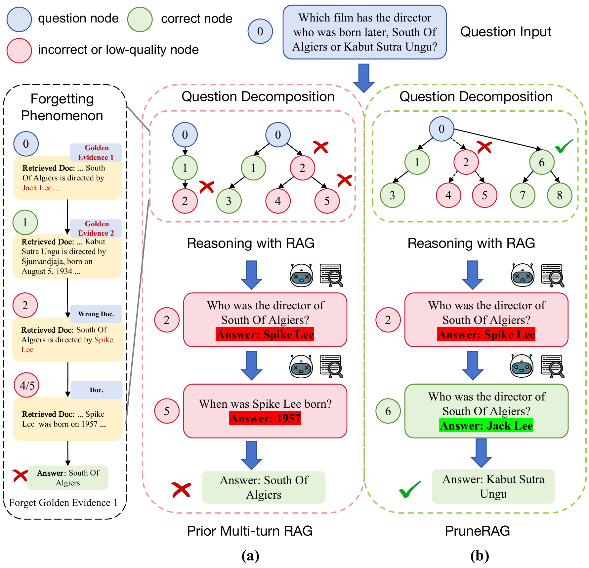

Adaptive Node Expansion
Controls tree width and depth by deciding whether a query should be answered, decomposed, or abstracted into entities.
WWW 2026 · Retrieval-Augmented Generation
PruneRAG builds a query decomposition tree, accepts reliable answers through confidence-guided pruning, and switches to entity-level retrieval when decomposition is no longer effective.
Abstract
Retrieval-augmented generation improves factual question answering by retrieving external evidence, but multi-turn RAG systems often suffer from evidence forgetting and redundant retrieval. PruneRAG addresses these issues with adaptive node expansion, confidence-guided decisions, and fine-grained entity retrieval. Together, these components preserve salient evidence during multi-hop reasoning while reducing unnecessary query expansion and inference cost.
Method
Each node is adaptively resolved as an answer, decomposed into sub-queries, or converted into entity-based retrieval. Low-confidence answers are rejected before they can propagate errors.
Controls tree width and depth by deciding whether a query should be answered, decomposed, or abstracted into entities.
Computes answer confidence from token-level log probabilities and accepts only reliable candidate answers.
Extracts entity-level anchors to retrieve precise evidence when further query decomposition becomes ineffective.
Results


Case Study
The case study illustrates how PruneRAG suppresses low-quality outputs, preserves retrieved evidence, and reaches the correct final answer through bottom-up backtracing.

Citation
@article{jiao2026prunerag,
title={PruneRAG: Confidence-Guided Query Decomposition Trees for Efficient Retrieval-Augmented Generation},
author={Shuguang Jiao, Xinyu Xiao, Yunfan Wei, Shuhan Qi, Chengkai Huang, Quan Z. Michael Sheng and Lina Yao},
conference={The Web Conference 2026 (WWW)},
year={2026}
}Share
The QR code points to the planned GitHub Pages URL. If you deploy under another domain, regenerate this image with the final URL.
https://fdioa.github.io/PruneRAG/